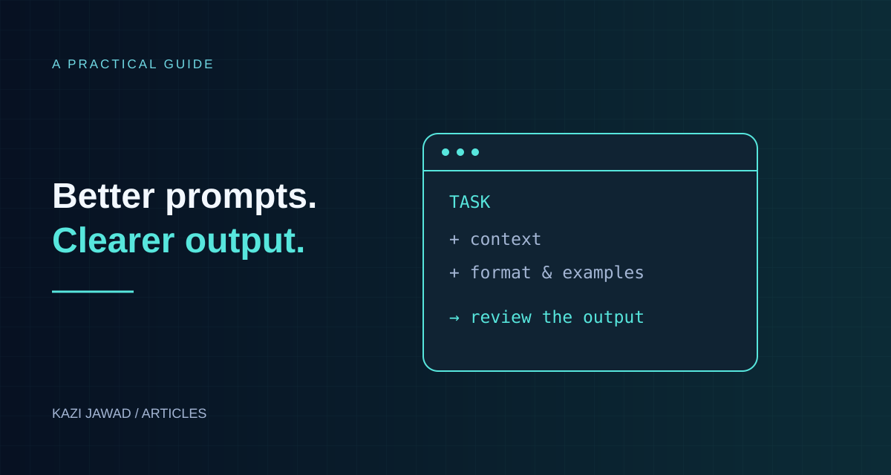

Articles / 03 · Practical AI
How to Write Prompts That Get the Output You Want
Clear instructions, useful examples, and a repeatable way to improve results.

In this article
Introduction
A vague request can produce an answer that misses the point. AI models do not automatically know your audience, source material, or standards, and may fill missing context with assumptions. Clearer prompts improve the odds of a useful result, but cannot guarantee accuracy or exact compliance. Model limitations and the quality of the supplied information matter too.
Prompt engineering is simply clear communication: telling the AI who it should be, what you want, what it needs to know, and how the result should look. It is a learnable and testable skill, not a trick. Anthropic's published prompting guidance emphasizes clear instructions, useful examples, and structured tags. For complex tasks, request a concise explanation and checks that help you assess the answer.
This guide walks you through that approach, with templates and before/after examples you can reuse immediately.
1. The Core Principle: Remove Guesswork
Imagine handing a task to a smart new colleague who knows nothing about your project, your audience or your standards. If you say "write something about innovation," they will ask questions. An AI usually will not ask; it will just guess. A prompt works when it answers, in advance, the questions that colleague would have asked.
The five questions every good prompt answers:
- Who is this for, and what role should the AI play?
- What exactly is the task?
- Why / context: what background does the AI need?
- How should the output look (format, length, tone)?
- What not to do (constraints)?
2. The Six-Part Prompt Formula
| # | Part | What to write | Example |
|---|---|---|---|
| 1 | Role | Who the AI should act as | "You are an experienced HR consultant." |
| 2 | Task | The exact job, in a clear verb | "Write a job description for..." |
| 3 | Context | Background, audience, purpose, source material | "The company is a 40-person steel fabrication firm hiring its first safety officer." |
| 4 | Format | Structure, length, language, style | "Use headings, 400-500 words, plain English." |
| 5 | Examples | One or more samples of what good looks like | "Here is a past job description we liked: ..." |
| 6 | Constraints | Rules, limits, things to avoid | "No jargon. Don't mention salary. Do not invent qualifications." |
You will not need all six every time. Simple tasks need two or three; complex or high-stakes tasks benefit from all six.
3. Before and After: The Difference Specificity Makes
Example A: Content writing
Weak: "Write about solar energy."
Strong:
You are a science writer for a general audience. Write an 800-word article explaining how rooftop solar panels work and whether they are worth the cost for a homeowner in a hot, sunny climate. Use simple language (suitable for a high-school reader), include a short section on maintenance, and end with a 3-point summary. Avoid technical jargon and do not make up statistics; if you are unsure of a number, say so.
Example B: Business analysis
Weak: "Analyze this sales data."
Strong:
You are a data analyst. Below is monthly sales data for 2025 for three product lines. 1) Identify the three most important trends. 2) Point out any unusual months and possible reasons. 3) Recommend two actions for next quarter. Present the result as a short executive summary (max 150 words) followed by a table of key figures. If the data is insufficient to support a conclusion, say so rather than guessing.
<data> ...paste data here... </data>
Example C: Email
Weak: "Write an email to my client."
Strong:
Write a polite but firm email to a client who is 30 days late on an invoice of $2,400. We have a good relationship and want to keep it. Tone: professional and warm. Length: under 120 words. Include: reminder of the invoice number (INV-1042), a new payment deadline of November 7, and an offer to help with any payment problems. No threats.
4. Core Techniques (and When to Use Each)
4.1 Be clear and direct
Say exactly what you want, in plain words. Use specific action verbs ("summarize," "compare," "rewrite," "list," "classify") instead of "talk about." If an instruction could be read two ways, spell out which meaning you intend.
4.2 Give examples (few-shot prompting)
Showing is stronger than describing. Provide one to three input-and-output samples so the AI can copy the pattern.
Classify each customer message as Complaint, Question, or Praise.
Message: "My order arrived broken." → Complaint
Message: "What time do you open on Friday?" → Question
Message: "Your team was fantastic!" → Praise
Message: "I still haven't received my refund." →
Tip: For creative work where you want variety, test with and without examples; examples can make output too similar to the sample.
4.3 Ask for a concise explanation and useful checks
For math, planning, or analysis, request the information needed to assess the result: relevant assumptions, key calculations, evidence, and a concise explanation.
"State the assumptions, show the key calculations, and briefly explain why your recommendation follows from the evidence."
Reasoning models may already work through problems internally. A useful explanation is one you can check; asking for a long internal thought process is not necessary. Evaluate the final answer against the source material and the task requirements.
4.4 Use tags or delimiters to separate parts
When your prompt has instructions, background text and data all mixed together, the AI can confuse them. Separate them with clear labels. XML-style tags work especially well with Claude, and any consistent naming is fine.
<instructions>Summarize the article below in 3 bullet points.</instructions>
<article>
...paste text here...
</article>4.5 Assign a role
"You are a tax accountant," "You are a patient teacher for 10-year-olds," "You are a skeptical reviewer." A role shapes vocabulary, depth and perspective. It helps most for tone and expertise; it is less important with newer reasoning models, which can often start directly from the task.
4.6 Specify the output format
Say precisely how you want the answer delivered: a table, a numbered list, JSON, a 3-paragraph email, bullet points under headings. If another program will read the output, give the exact structure.
"Return the result as JSON with the keys:
title,summary,priority(high/medium/low)."
Give a small example of the expected output. If your application requires strict JSON, use the model’s supported structured-output feature and validate the result. Assistant-response prefilling depends on the model and is not supported everywhere; an ordinary prompt alone does not guarantee a valid schema.
4.7 Break big tasks into steps (prompt chaining)
Instead of one enormous request ("research, write, edit and design my report"), do it in stages: outline first, then review it, then write section by section, then edit. Each step gets full attention, and you can correct course early.
4.8 Set constraints and permission to say "I don't know"
- Length: "no more than 200 words."
- Scope: "use only the text I provided."
- Honesty: "If the information is not in the document, say 'Not stated' instead of guessing."
This instruction sets an appropriate standard, but it is not a guarantee. Check important claims against reliable sources.
5. A Reusable Master Template
Copy, fill in, and adapt:
ROLE:
You are [role / expertise].
TASK:
[Exact action verb] + [what] + [for whom].
CONTEXT:
[Background, goal, audience, situation, why this matters.]
INPUT:
<material>
[Paste the text, data, or notes to work from.]
</material>
FORMAT:
- Structure: [headings / bullets / table / paragraphs / JSON]
- Length: [word or item count]
- Tone and language: [formal / friendly / simple English / Bangla, etc.]
EXAMPLE OF GOOD OUTPUT (optional):
[Sample]
RULES:
- Do: [...]
- Don't: [...]
- If unsure or missing information, say so instead of guessing.
BEFORE ANSWERING:
[Optional: "Ask me up to 3 clarifying questions if anything is unclear."]6. The Iteration Loop: Your First Prompt Is a Draft
Rarely does the first attempt perfectly match your expectations. Treat prompting as a loop:
- Write the prompt.
- Run it and read the result critically.
- Diagnose what is off: too long? wrong tone? missing facts? wrong structure?
- Fix the prompt, not just the output. Add the missing instruction or example.
- Repeat until it works, then save the winning prompt as a template.
Diagnosis cheat sheet
| Problem | Likely cause | Fix |
|---|---|---|
| Too generic | No context or audience | Add who it's for and why |
| Wrong tone | Tone not specified | State the tone and give a sample |
| Too long / too short | No length limit | Give a number: "about 150 words" |
| Made-up facts | No source limits | "Use only the text provided; say if unknown" |
| Wrong format | Format not specified | Describe the structure or show an example |
| Misses part of the request | Task too big or tangled | Split into steps or numbered requirements |
| Inconsistent from run to run | Open-ended wording | Add examples and tighter constraints |
You can also ask the AI to help: "Here is my prompt and the result I got. The result was too formal. How should I improve the prompt?"
7. Common Mistakes to Avoid
- Vagueness: "Make it better," "Write something good."
- Hidden assumptions: Knowing your audience, goal or preferences, but never stating them.
- Overloading: Ten unrelated tasks in one prompt.
- Contradictions: "Be very detailed but keep it under 50 words."
- Only saying what not to do: Tell it what to do instead. ("Write in plain conversational English" works better than "don't be formal.")
- No success criteria: If you can't describe what a good answer looks like, the AI can't aim at it. Define it first.
- Blind trust: Always check facts, numbers, quotes and citations, especially in medical, legal, financial or academic work.
- Sharing sensitive data carelessly: Don't paste passwords, personal identification numbers or confidential company data into tools you haven't checked for privacy.
8. Advanced Tips
- Ask the AI to ask you. "Before you start, ask me any questions you need to produce the best result." Great for complex or unfamiliar tasks.
- Request a self-check. "After writing, review your answer against my requirements and list anything you missed."
- Request alternatives. "Give me three versions: formal, friendly, and very short."
- Define your quality bar. "A good answer would be one a busy manager can read in 30 seconds and act on."
- Provide reference style. Paste a paragraph you wrote and say "match this voice."
- Use system-level or custom instructions (where your tool allows) to store standing preferences, such as your preferred language, tone and formatting.
- Test across cases. If you use a prompt repeatedly (for work or an app), try it on several different inputs before trusting it.
- Version your prompts. Keep a document of your best prompts with notes on what changed and why.
9. Three Ready-to-Use Prompt Examples
9.1 Learning a topic
You are a patient tutor. Explain how inflation works to a 16-year-old with no economics background. Use one everyday analogy, then a simple numerical example. Finish with 3 quiz questions (with answers listed separately at the end). Keep the whole response under 500 words.
9.2 Improving your own writing
You are a professional editor. Improve the clarity and flow of the text below without changing my meaning or voice. Show the edited version first, then a short bulleted list of the 5 most important changes you made and why.
<text> ...paste... </text>
9.3 Planning a project
You are a project manager. I need to launch a small online store in 6 weeks with a budget of $2,000 and one part-time helper. Create a week-by-week plan in a table with columns: Week, Goals, Tasks, Owner, Estimated Cost. Flag the top 3 risks and how to reduce each. Ask me up to 3 clarifying questions first if anything important is missing.
10. Quick Checklist Before You Press Enter
- Did I say who the AI should be (if it matters)?
- Is the task one clear action?
- Did I include the context and source material it needs?
- Did I describe the format, length and tone?
- Did I give an example (if the style matters)?
- Did I set rules and allow it to say "I don't know"?
- Do I know what a good result looks like?
- Am I ready to iterate and refine?
Conclusion
Great prompts are not magic words; they are well-organized instructions. The more clearly you describe the role, task, context, format and limits, and the more you show what "good" looks like, the less the AI has to guess, and the closer the result will be to what you imagined. Start simple, test, refine, and save what works. As AI becomes part of everyday work, the ability to communicate precisely with it will be one of the most valuable skills you can build.
Sources and Notes
This guide adapts the supplied draft into a practical framework. Prompt effectiveness depends on the task and the model; test the examples on the tool you actually use.
- Anthropic: prompting best practices.
- Anthropic: clear, specific requests and iterative refinement.
- AWS: prompt engineering techniques and examples.
Examples are templates to adapt, not promises of factual correctness. Review the output and validate any format that another application depends on.